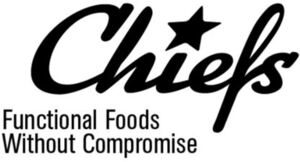

Trade Mark Journal No.2025/046 14 November 2025
WO0000001873193 (5,29,30,32)
Office of origin: Switzerland
Date of International Registration:13 March 2025
Date of designation in the UK:
13 March 2025

International priority date claimed: 31 October 2024
(Switzerland)
(823047)
- Class 5
- Vitamin beverages; protein powder for making beverages; all the aforesaid goods also enriched with proteins and/or with added nutritional elements and/or reduced calories and/or sugar-free and/or added sugar substitutes.
- Class 29
- Dairy products, in particular milk and milk products, milk-based cocoa beverages, mixed milk beverages, milk drinks, cheeses, yogurts, quark and skyr; kefir, milk powder; whey powder; desserts with milk products; desserts with dairy substitutes; dairy-based desserts; desserts based on dairy substitutes; spreads based on dairy products; dairy spreads; dairy substitutes, in particular based on soy, oats, almond, coconut, rice, peas, hemp and lupins; instant meals and/or ready-made meals, namely based on meat, vegetables, potatoes, leguminous plants, dairy products; milk slices; bars, namely based on potatoes, pulses, dairy products, eggs, meat, vegetables, fruits, chia seeds or walnuts; chips, namely based on potatoes, pulses, dairy products, eggs, meat, vegetables, fruits, chia seeds or walnuts, also low in fat; snacks, namely based on potatoes, pulses, dairy products, eggs, meat, vegetables, fruits, chia seeds or walnuts; spreads and pastes, namely based on nuts, fruits, leguminous plants or vegetables; jams; meat substitutes made from cereals or pseudocereals; meat substitutes based on leguminous plants or vegetables; soups and bouillons; all the aforesaid goods also enriched with proteins and/or with added nutritional elements and/or reduced calories and/or sugar-free and/or added sugar substitutes.
- Class 30
- Pizzas; chocolate bars; bars based on chocolate or cocoa; bars, namely made from cereals or pseudo-cereals; chips, namely made from cereals or pseudo-cereals; snacks, namely made from cereals or pseudo-cereals; crackers; savory pastries, in particular lye bread rolls and protein-enriched pretzels; flavorings for foods; flavorings for beverages; sauces; salad dressings; instant meals and/or ready-made meals, namely made from cereals, pseudo-cereals; pastry and bakery products, in particular breads, pastries, cakes, tarts, pralines, petits fours, pastries, cookies and waffles; chocolate, also with pieces of fruits, pieces of nuts, cereals, fruit jelly, milk cream or walnut cream; desserts, made from breakfast cereals, cereals, pseudocereals, fruits or leguminous plants; desserts, namely based on breakfast cereals, cereals, pseudocereals, fruits or leguminous plants; chocolate-based, cocoa-based sweetened spreads; confectionery [except for medical purposes], in particular sweets, lozenges, dragees, chewing gum and marshmallows; fruit gums [except for medical purposes]; pudding; sweetened mousses; flan; rice pudding; semolina pudding, waffles and waffle balls, in particular with cream filling; crispy cereals, in particular coated, wrapped or sugar-coated; high-protein cereal bars; protein-rich nut bars; natural sweeteners, in particular low-calorie; sweetened frostings; ices; ice cream; sherbets [ices]; ice cream desserts; iced bars; frozen yogurt; beverages based on coffee, tea, cocoa, chocolate and substitutes for these, also with milk; chocolate drinks, also with milk; chocolate-coated walnuts; food preparations based on cereals or pseudo-cereals; flour-based foods; dried and fresh pasta, flour and dumplings; muesli; cereals; breakfast cereals; oatmeal; semolina; all the aforesaid goods also enriched with proteins and/or with added nutritional elements and/or reduced calories and/or sugar-free and/or added sugar substitutes.
- Class 32
- Non-alcoholic beverages, in particular protein drinks, energy drinks, whey beverages, isotonic drinks and sports drinks; carbonated waters; flavored drinks, also carbonated beverages; fruit beverages; functional beverages enriched with amino acids; all the aforesaid goods also enriched with proteins and/or with added nutritional elements and/or reduced calories and/or sugar-free and/or added sugar substitutes.
Chiefs AG
Representative: SCHWENNINGER INGLIN RECHTSANWÄLTE, Joweid Zentrum 1, CH-8630 Rüti, SWITZERLAND